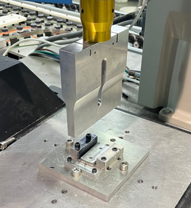
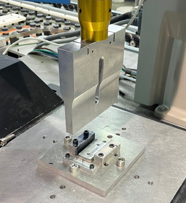

Project Overview: Robotic Assembly of the Wings & Horizontal Stabilizers
Objective:
To develop a robotic assembly process to ultrasonically weld wing and horizontal stabilizer halves using a pick-and-place robot and an ultrasonic welder.
Note: For some reason we did not take a video of the robotic assembly process or I just can't find it, but this video demonstrates many of the concepts discussed below. This includes our pallet design, end effector design, 3-2-1 fixturing, and the general orientation of all the components in the workspace. It also hints at some of the issues we struggled with such as the shifting of the pallet and wings as the end effector presses down to pickup parts and the issue with suction timing so that the end effector would consistently pick up a part without dropping it.
Collaboration:
Upon starting, I consulted with our manufacturing shop supervisor, who highlighted the difficulties associated with robotic assembly, noting that the robot’s lack of adaptability meant that even minor changes in the environment could disrupt the operation. To save time, he suggested treating the robotic assembly as a case study and performing the bulk of the assembly manually. Rather than seeing this as a setback, I embraced it as a challenge and committed to making the robotic process work, dedicating myself to daily work in the shop. My dedication inspired several peers to join me, leading to a collaborative effort. We embraced a continuous improvement methodology, incrementally refining our approach in order to achieve better results.
Robotic Assembly Process for Wings (identical for horizontal stabilizers)
1. Preliminary Inspection:
- We conducted initial inspections to ensure the injection-molded parts met basic design requirements. Common issues included excess flashing or short shots, sometimes requiring scrapping of the part.
2. Setup:
- Parts were prepared, the welding fixture was attached to the ultrasonic welder, and the robot was calibrated. Pallets containing stacks of injection-molded wing-halves were organized.
3. Pallet Design:
- Each pallet held 30 wing-halves, arranged in three stacks of ten, utilizing press-fit pins and rods for alignment. We employed the 3-2-1 fixturing method to stabilize the pallets on the worktable, ensuring the pallets were consistently located during assembly.
4. Robot Specifications:
- The Adept Cobra 800 pick-and-place robot was programmed using V+, an assembly language. We also used a control board to operate the robot manually. We designed a custom end effector with vacuum suction cups to pick-up parts, and added extended arms to adjust for extremely limited space when interacting with the ultrasonic welder.

5. Welding Fixture:
- Designed with chamfered locator pins - the welding fixture minimizes potential errors by accommodating slight misalignments in part placement.
 

6. Procedure:
- Assembly Operation: The robot picked up a bottom wing-half from the first pallet and placed it into the welding fixture, followed by the top wing-half from a second pallet.
- Welding and Inspection: An operator ensured proper alignment of the wing-halves in the fixture, initiated the welding process, and afterwards conducted a visual inspection of the welded wing before the robot transferred it to a collection bin.
- Quality Inspection: A go-no-go gauge pin was used to ensure the wings would be compatible with the plane’s fuselage.

7. Challenges and Solutions: Throughout the project, we identified and addressed several key issues:
- Vibration Management: The speed of the robot's movements affected the accuracy of the wing placement. We slowed the robot's approach to the welding fixture and added cross-bracing to reduce vibrations.
- Drop Height Adjustment: We modified the welding fixture and end effector to decrease the drop distance of the wings when depositing them onto the fixture, enhancing assembly repeatability.
- Smooth Exit Design: Rounding the top edges of alignment pins prevented the robot from snagging on the edges and dropping wings during retrieval.
Results:
We successfully welded over 600 wings, achieving a 95% success rate once the assembly process was established. While a higher success rate is necessary for full automation in an industrial setting, our results were satisfactory in demonstrating an implementation of robotic assembly.
This experience highlighted the importance of continuous improvement in robotic assembly processes. We carefully addressed every potential source of error, and although there were areas for future improvement—such as redesigning the pallet to adapt to deviations in the wing placement—our project successfully combined manual and automated techniques to meet tight deadlines.
Documentation:
Developed comprehensive digital work instructions in VKS, detailing each step of the assembly process.
Manufacturing Techniques:
Used a waterjet, vertical mill, bandsaw, arbor press, and lathe to make the parts needed for the robotic assembly process.
Future Improvements:
While the project was successful, several areas for improvement were identified:
- Redesigning the pallet to minimize shifts in the stacked parts
- Redesigning the end effector for better self-correction and to reduce the drop height to the welding fixture
- Strategically speeding up actions of the automated operation to reduce time per assembly
- Increase the rigidity of the end effector to mitigate vibration issues
Contact Me
Email (preferred contact method): michael.aksen@gmail.com
Phone #: 201-982-1776